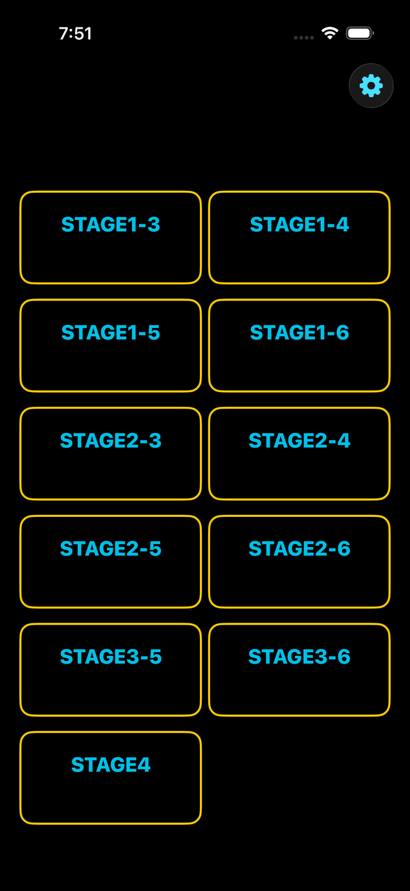
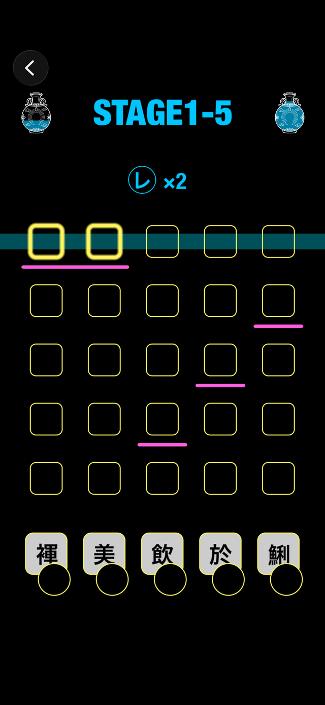
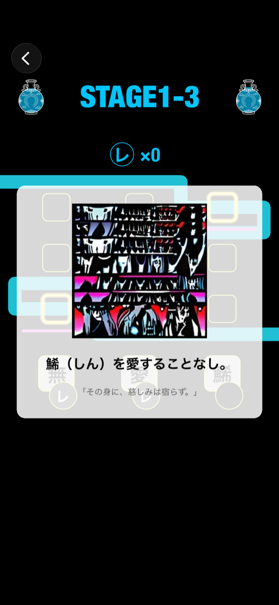

kaeriTen
漢文を、指先で読み解く。返り点パズルゲーム。
レ点・一二三四点・ハイフンを漢字の下に置いて、正しい読み順のパイプをつなげよう。 全11ステージ、タイムアタックとライフ制でゲームらしい緊張感も。 解けたら、その文の書き下し文と現代語訳・イラストが見られます。
Screenshots
実機シミュレータで撮影した実際の画面です。



特徴
読み下しの仕組みを、パズルとして体で覚える。
返り点を置いて読み順を再現
レ点・一二三四点・ハイフンを漢字の下のスロットに置くと、その配置から読み順が水色のパイプとして描かれます。正解の読み順（マゼンタの線）と重なればクリア。
全11ステージ
3〜6文字の短文から始まり、難易度と文字数を組み合わせた10ステージに加え、ヒント表示なしの総合力ステージ「STAGE4」も用意。
制限時間とライフ制
1問30秒の制限時間つき。タイムアウトするとライフが減り、正解すると少し回復。ライフが尽きるとゲームオーバー、ステージクリア時は残りライフに応じた評価（PERFECT〜NOT BAD）がつきます。
解いたら意味がわかる
クリアすると、その文の書き下し文と現代語訳、イラストが表示されます。漢文の内容そのものを味わえるごほうび演出です。
ステージごとのBGM
難易度ごとに異なるBGMが流れ、ステージ切り替え時はクロスフェード。操作音・クリア音などの効果音つきで、設定画面から音量を個別に調整できます。
何度でも新しい問題
出題は元データベースの数千問からランダムに選ばれ、直近に遊んだ問題は優先的に避けられるので、同じステージを繰り返し遊んでも飽きにくい仕組みです。
遊び方
4ステップだけ。漢文の知識がなくても、遊びながら覚えられます。
漢字の下の丸（スロット）をタップすると、返り点の選択メニューが出てきます。
「レ」「一」「二」…から選ぶと、その返り点がスロットに置かれます。指を離す場所で選択が確定します。
水色のパイプの形をマゼンタの線に合わせるのが目標です。パイプは今の返り点配置から計算された実際の読み順を表しています。
制限時間内に一致させればクリア。書き下し文と現代語訳が表示され、次の問題に進みます。